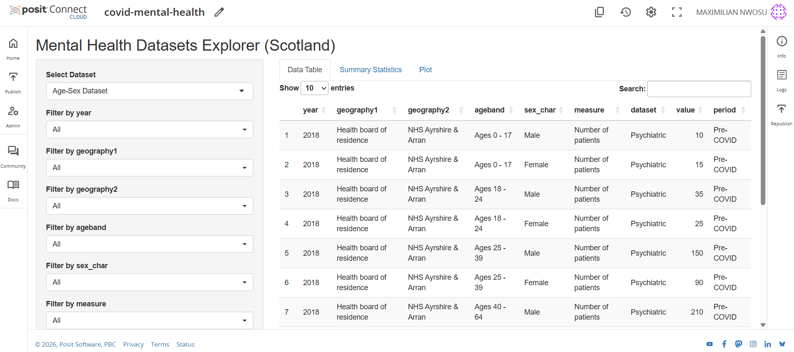
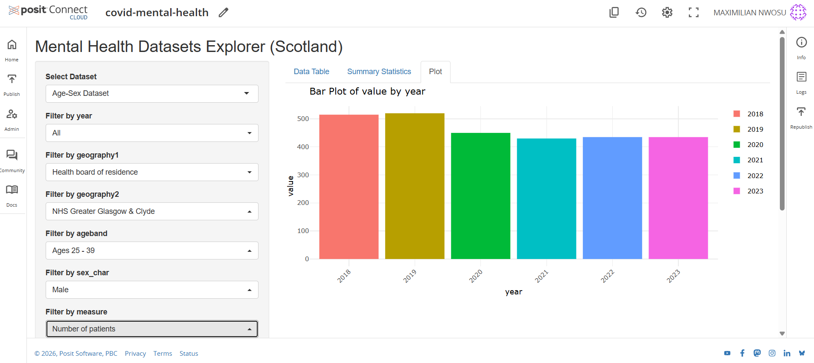

Project Motivation
During the COVID-19 pandemic, public discussion frequently highlighted rising loneliness, anxiety and burnout. However, the evidence behind these narratives was often fragmented.
This project aimed to answer several data-driven questions:
- Did mental-health service use increase or decline during the pandemic?
- Which regions and age groups experienced the greatest disruption?
- How did policy responses and NHS capacity pressures influence access to care?
The objective was to transform Scotland’s public health data into actionable insights that could inform policy discussions, resource planning and equitable recovery strategies.
Data Sources
- Public Health Scotland datasets
- NHS Scotland mental-health service statistics
- Time period analysed: 2018–2023
- Metrics analysed: psychiatric inpatient admissions and referral activity
- Additional context variables: mental-health expenditure by local authority
- Breakdowns: health board, age group, gender and diagnostic category
Diagnostic data were organised using ICD-10 categories including schizophrenia, bipolar disorder, depression and anxiety-related conditions.
Data Preparation
All datasets were cleaned and harmonised in R using packages such as dplyr, tidyr and lubridate.
- Creation of monthly and quarterly time-series indices
- Handling missing values and inconsistent update cycles
- Construction of normalised indicators for cross-regional comparisons
- Integration of multiple datasets into a unified analytical structure
Methods and Modelling
Two complementary analytical approaches were used to evaluate changes in mental-health service patterns.
Interrupted Time-Series Analysis
Interrupted Time-Series modelling was used to detect whether March 2020, when COVID-19 restrictions began, caused a structural break in service use. The model estimated both the immediate shock and subsequent trend changes.
Mixed-Effects Regression (GLMM)
Mixed-effects models were used to account for regional variation across health boards.
- Fixed effects: time trend, mental-health spending, pandemic indicator
- Random effects: health board variation
This approach allowed the analysis to capture both national trends and regional differences in service disruption.
Key Findings
Interpretation
- Psychiatric admissions dropped sharply during early pandemic months and have not fully recovered.
- Urban health boards experienced the most pronounced reductions in service access.
- Younger adults were disproportionately affected by disruptions.
- Admissions for severe disorders remained relatively stable, while depression and anxiety admissions declined sharply.
These patterns suggest that service delivery shifted towards community-based and remote care, while hospital capacity constraints limited inpatient access.
Visual Analytics: The Shiny Dashboard
To translate the statistical modelling into an accessible tool, an interactive Shiny dashboard was developed.
The dashboard allows users to explore:
- Diagnosis trends across time
- Regional comparisons across health boards
- Demographic differences by age and gender
- Pre- and post-COVID trend changes
This interactive environment bridges advanced statistical modelling with clear visual storytelling for policymakers and public-health stakeholders.
Interactive Dashboard Preview
Open Live Dashboard

Note: Posit Cloud blocks embedded previews on external websites. Use “Open Live Dashboard” to interact with the app.
Ethics and Data Responsibility
All analysis used publicly available, aggregated and anonymised datasets. Several methodological checks were performed to maintain integrity:
- Sensitivity testing using lagged models
- Cross-year validation
- Transparent documentation of modelling assumptions
The project emphasises responsible analytics where statistical evidence informs policy decisions while protecting privacy and avoiding misuse of sensitive health data.
Impact and Practical Value
- Provides a reproducible framework for monitoring mental-health service trends
- Supports NHS planning and capacity forecasting
- Helps policymakers identify regions and populations with unmet mental-health needs
- Demonstrates how open public health data can inform equitable resource allocation